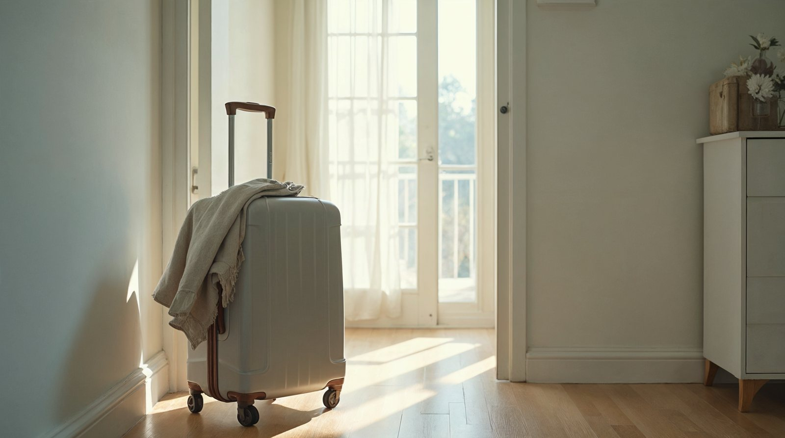
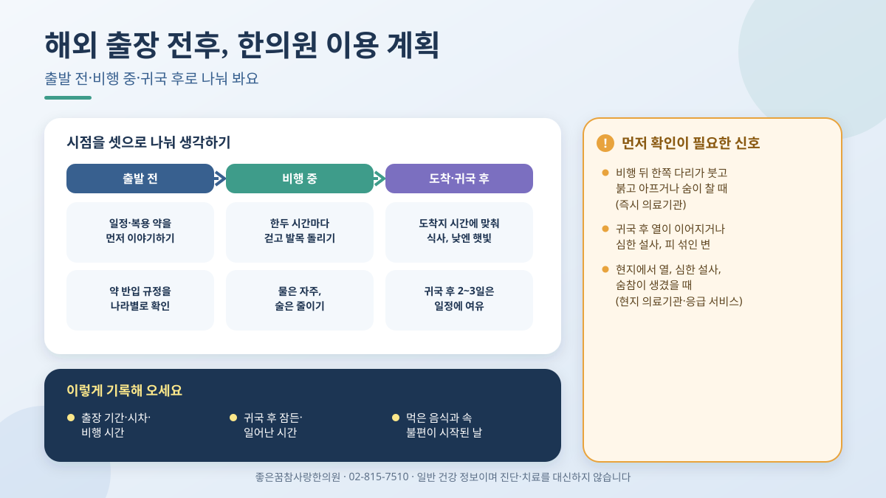

이종호 한의사 감수좋은꿈참사랑한의원 대표원장 (한의사 면허번호 19769)발행 2026-11-23 · 수정 2026-11-26
이 글의 차례
해외 출장은 잠, 식사, 이동이 한꺼번에 달라지는 일정입니다. 출장 전후에 한의원을 이용하려면 출발 1~2주 전과 귀국 뒤 며칠이 지난 시점으로 나누어 생각하면 편하고, 현지에서 급한 증상이 생기면 현지 의료기관이 먼저라는 점도 함께 기억해 두세요. 출장이 잦은 분이라면 다음 출장 일정을 미리 알려 주시는 것만으로도 상담 계획을 세우기가 쉬워집니다.
왜 출장 전후에 몸이 흔들릴까요
- 시차 때문에 잠드는 시간과 배고픈 시간이 한꺼번에 어긋납니다.
- 긴 비행에서 오래 앉아 있으면 다리가 붓고 허리가 굳기 쉽습니다.
- 낯선 음식과 물, 불규칙한 식사가 속을 불편하게 할 수 있습니다.
- 출장 전 업무가 몰려 이미 지친 상태로 출발하는 경우가 많습니다.
자주 하는 오해
- 출발 전날 한 번 들르면 충분하다고 여기기 쉽지만, 출발 직전에는 일정이 빠듯해 상담 내용을 챙기기 어려우니 1~2주 전에 한 번 이야기해 두는 편이 여유롭습니다.
- 귀국 다음 날 바로 오셔야 정확하다고 생각하기 쉽지만, 시차 피로는 며칠 사이에 자연히 가라앉기도 하니 3~4일 지나도 남는 불편을 정리해 오시면 상담이 분명해집니다.
- 한약은 해외에 가져가도 문제없다고 여기기 쉽지만, 나라마다 반입 규정이 달라 출발 전에 확인이 필요합니다.
- 시차로 잠이 흐트러지면 낮잠을 길게 자서 보충하면 된다고 생각하기 쉽지만, 긴 낮잠은 오히려 밤잠을 더 늦출 수 있습니다.
예를 들면 이런 경우입니다
- 예를 들어 한 달에 한두 번 장거리 비행을 하는 직장인이라면, 출장 일정표를 진료 때 함께 보며 귀국 뒤 방문하기 좋은 요일을 미리 정해 둘 수 있습니다.
- 예를 들어 평소 허리가 불편한데 열 시간 넘는 비행을 앞둔 분이라면, 기내에서 일어나 걷는 간격과 앉는 자세를 출발 전에 함께 이야기해 볼 수 있습니다.
- 예를 들어 출장 뒤 속이 불편해진 분이라면, 현지에서 먹은 음식과 증상이 시작된 날을 적어 오시면 원인을 좁혀 보기가 쉬워집니다.
먼저 이렇게 여쭙니다
- 출발일과 귀국일, 시차가 큰 지역인가요?
- 현지에서 지켜야 하는 일정과 이동 시간은 어느 정도인가요?
- 복용 중인 약과 챙겨 갈 약은 무엇인가요?
- 평소 불편했던 곳과 출장 중 걱정되는 점은 무엇인가요?
스스로 점검해 보세요
출장 전후로 방문을 준비할 때 아래 항목을 확인해 보세요.
- 출발일, 귀국일, 현지와의 시차를 한 줄로 적어 두었다
- 복용 중인 약과 영양제 이름, 챙겨 갈 양을 확인했다
- 가져갈 약이 방문 국가 반입 규정에 맞는지 알아보았다
- 출발 전 방문하려면 1~2주 여유를 두고 예약했다
- 귀국 뒤 첫 3~4일 동안 잠든 시간과 깬 시간을 적을 준비를 했다
- 현지에서 급할 때 연락할 의료기관이나 응급 번호를 알아 두었다
출장이 잦다면 이 목록을 휴대폰 메모에 저장해 두고 출장 때마다 다시 꺼내 보세요. 매번 같은 항목을 확인하다 보면 어느 출장 뒤에 잠이나 소화가 더 흔들렸는지가 자연스럽게 쌓여, 다음 상담 때 비교해 보기가 쉬워집니다.
오시는 길과 진료 시간
- 상도역 3번 출구로 나와 약 200m 직진한 뒤, 오거리에서 우회전해 약 200m 오시면 됩니다.
- 노량진역 쪽에서는 3번 출구에서 마을버스 동작01을 타고 신동아리버파크에서 내리시면 됩니다.
- 진료 시간은 평일 09:30~20:00(점심 13:00~14:00), 토·일·공휴일 09:30~15:00입니다. 원장별 진료 일정은 방문 전 전화(02-815-7510)로 확인해 주세요.
일상에서 먼저 해 볼 수 있는 것
- 비행 중 한두 시간마다 일어나 걷고 발목 돌리기
- 기내에서 물을 자주 마시고 술은 줄이기
- 도착지 시간에 맞춰 식사하고 낮에는 햇빛 쬐기
- 귀국 후 2~3일은 일정에 여유를 두기
한의원에서 함께 살필 수 있는 경우
- 비행 뒤 양쪽 다리가 붓고 무겁다고 느낄 때 앉아 있던 자세와 함께 살핍니다.
- 시차로 잠이 흐트러졌다고 느낄 때 기상 시간과 식사 시간을 함께 묻습니다.
- 낯선 음식 뒤 속이 불편할 때 먹은 것과 증상의 경과를 함께 살핍니다.
좋은꿈참사랑한의원에서는 출장 일정과 복용 약을 먼저 듣고 출발 전에 할 수 있는 범위를 함께 정합니다. 돌아온 뒤에는 잠과 소화, 붓기가 어떻게 달라졌는지 듣고 진찰해 방법을 정하며, 출장 중 지킬 생활 요령을 짧게 정리해 드립니다.
첫 방문이라면 출장 일정과 지금 불편한 곳을 여쭙는 문진으로 시작합니다. 이어서 모든 분께 진맥을 하고, 비행 뒤 허리·어깨 근육이나 힘줄 상태가 걱정되는 경우처럼 필요하다고 판단되면 초음파 등 장비로 확인합니다.
적어 오신 수면 시간과 식사 기록을 함께 보고, 오늘 받을 치료와 그 이유, 다음 출장 전후에 지킬 생활 순서를 설명해 드립니다. 한약 상담을 하신다면 출장 기간에 맞춰 복용 일정을 어떻게 할지도 함께 이야기합니다.

언제 지켜보고, 언제 바로 진료받을까요
- 시차로 잠이 어긋난 정도라면 도착지 시간에 맞춰 일어나고 아침 햇빛을 쬐며 3~4일 지켜보세요.
- 1~2주가 지나도 밤잠이 돌아오지 않거나 속 불편이 이어지면 상담을 받아 보세요.
- 비행 뒤 한쪽 다리가 붓고 아프거나 숨이 차면 기다리지 말고 바로 응급실로 가세요.
이렇게 기록해 오시면 상담이 쉬워집니다
- 출장 기간과 시차, 비행 시간
- 귀국 후 잠든 시간과 일어난 시간(며칠)
- 출장 중 먹은 음식과 속 불편이 시작된 날
- 다음 출장 예정일(알고 있다면)
이런 증상은 먼저 확인이 필요합니다
- 비행 뒤 한쪽 다리가 붓고 붉으며 아프거나 숨이 찬 경우(바로 가까운 응급실)
- 귀국 후 열이 이어지거나 심한 설사, 피 섞인 변이 있는 경우
이런 신호가 있으면 한의원보다 가까운 병원이나 응급실을 먼저 찾으세요.
함께 읽으면 좋은 글
- 해외여행 뒤 시차 때문에 잠이 흐트러질 때는 어떻게 하나요?
- 비행기나 장거리 이동 뒤에 다리가 붓고 무거울 때는 어떻게 하나요?
- 한약 복용 시간을 지키기 어려운 바쁜 사람은 한의원과 어떻게 상의하면 되나요?

여쭙는 것
- 출발일과 귀국일, 시차가 큰 지역인가요?
- 현지에서 지켜야 하는 일정과 이동 시간은 어느 정도인가요?
- 복용 중인 약과 챙겨 갈 약은 무엇인가요?
생활에서 해 볼 것
- 비행 중 한두 시간마다 일어나 걷고 발목 돌리기
- 기내에서 물을 자주 마시고 술은 줄이기
- 도착지 시간에 맞춰 식사하고 낮에는 햇빛 쬐기
한의원에서 함께 살필 것
- 비행 뒤 양쪽 다리가 붓고 무겁다고 느낄 때 앉아 있던 자세와 함께 살핍니다.
- 시차로 잠이 흐트러졌다고 느낄 때 기상 시간과 식사 시간을 함께 묻습니다.
- 낯선 음식 뒤 속이 불편할 때 먹은 것과 증상의 경과를 함께 살핍니다.
먼저 확인이 필요한 신호
- 비행 뒤 한쪽 다리가 붓고 붉으며 아프거나 숨이 찬 경우(바로 가까운 응급실)
- 귀국 후 열이 이어지거나 심한 설사, 피 섞인 변이 있는 경우
한눈에 보는 표
| 구분 | 핵심 |
|---|---|
| 여쭙는 것 | 출발일과 귀국일, 시차가 큰 지역인가요? 현지에서 지켜야 하는 일정과 이동 시간은 어느 정도인가요? |
| 생활에서 해 볼 것 | 비행 중 한두 시간마다 일어나 걷고 발목 돌리기 기내에서 물을 자주 마시고 술은 줄이기 |
| 한의원에서 함께 살필 것 | 비행 뒤 양쪽 다리가 붓고 무겁다고 느낄 때 앉아 있던 자세와 함께 살핍니다. 시차로 잠이 흐트러졌다고 느낄 때 기상 시간과 식사 시간을 함께 묻습니다. |
| 먼저 확인이 필요한 신호 | 비행 뒤 한쪽 다리가 붓고 붉으며 아프거나 숨이 찬 경우(바로 가까운 응급실) 귀국 후 열이 이어지거나 심한 설사, 피 섞인 변이 있는 경우 |
자주 묻는 질문
출장 전에 꼭 방문해야 하나요?
필수는 아닙니다. 걱정되는 점이 있을 때 일정을 알리고 상담해 보시면 됩니다.
약을 해외로 가져가도 되나요?
나라별 규정이 있으므로 출발 전에 확인해 두시기를 권합니다.
시차 적응이 안 되면 바로 방문해야 하나요?
며칠 지켜본 뒤에도 이어지면 상담해 보시면 됩니다.
출장 중에는 한약 복용을 어떻게 하나요?
출장 기간과 일정을 미리 알려 주시면 복용 일정과 보관 방법을 함께 상의합니다. 반입 규정은 방문 국가마다 다르니 따로 확인해 주세요.
좋은꿈참사랑한의원은 재진 때 지난번 이야기부터 이어서 여쭙니다. 진료시간과 예약은 오시는 길에서 확인하세요.
어디서 상담받을 수 있나요?
좋은꿈참사랑한의원은 서울 동작구 만양로2길 2 신성빌딩 3층·5층(서울 동작구 상도동, 7호선 상도역 3번 출구 근처)에 있습니다. 한의사 3명(이종호 대표원장, 조영기 수석진료원장, 정원영 진료원장)이 진료합니다. 진료시간은 평일 09:30~20:00(점심 13:00~14:00), 토·일·공휴일 09:30~15:00이며, 방문 전 전화로 확인을 권합니다. 예약은 네이버 예약, 카카오톡 상담, 전화 02-815-7510로 받습니다.
이 글은 일반적인 건강 정보이며 개인의 진단이나 치료를 대신하지 않습니다. 증상이 있거나 복용 중인 약이 있다면 진료를 통해 확인하세요. 치료 효과는 개인마다 다를 수 있습니다.
작성 기준: 일반적으로 알려져 있는 건강 정보를 참고해 정리했습니다(대표원장 감수). 증상 기록은 1~2주 동안 하루 1회, 비슷한 시간에 적어 오시면 지난 상태와 비교하기 쉽습니다.